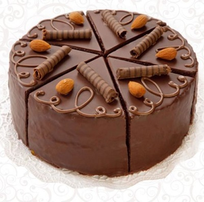
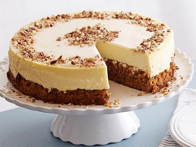
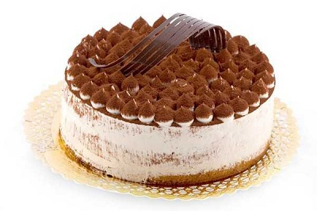
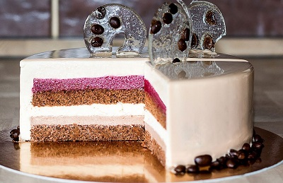
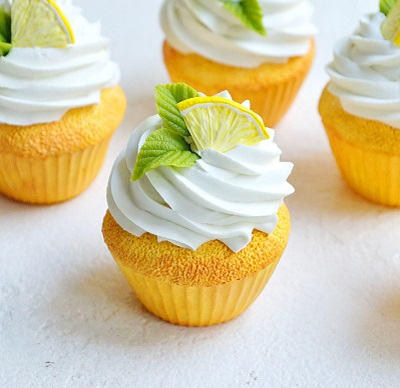
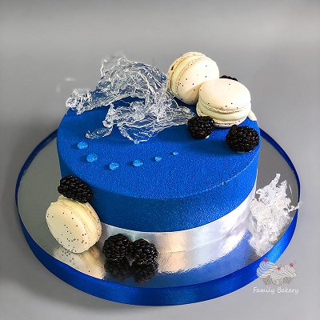

.png)
Estarkhazi
23,99 rub/kg
Layers of delicious nut crust are combined with butter custard with condensed milk.
The top is decorated with a pattern of white and chocolate confectionery glaze.
The side surface is strewn with fried almond chips.
The cost is indicated for 1 kg.

Leicester
19,99 rub/kg
Delicious gingerbread cakes with walnuts, soaked in cream with boiled condensed milk.
Light and airy cake is well known. It contains small choux pastry "fingers"
sandwiched with sour cream and sprinkled with natural chocolate and walnuts.
The cost is indicated for 1 kg.

Cheesecake
21,99 rub/kg
Cheesecake is a dessert based on soft cheese or cottage cheese. Delicate and airy, creamy and moist, stuffed and
glaze. Light and airy cake is well known. It contains small choux pastry "fingers" sandwiched with sour cream and
sprinkled with natural chocolate and walnuts.
The cost is indicated for 1 kg.

Tiramisu
25,99 rub/kg
Delightfully delicate cake with coffee cream made from real Mascarpone cheese and juicy biscuit created,
to give you pleasure. The quintessence of the most delicate taste, fabulous gastronomic delight,
gourmet dessert is all about Tiramisu.
The cost is indicated for 1 kg.

Cafehouse
32 rub/kg
Shortbread dough prepared according to the proprietary recipe
is combined with the most delicate cream based on boiled condensed milk.
Light and airy cake is well known. It contains small choux pastry "fingers"
sandwiched with sour cream and sprinkled with natural chocolate and walnuts.
The cost is indicated for 1 kg.

Prague
28 rub/kg
"Prague" - chocolate cake, consists of three biscuit cakes with two layers of
Prague cream. The top and side surfaces are covered with jam and glazed with fondant (or the side surfaces are finished with cream and biscuit crumbs). Decorated with a cream pattern on top.
The cost is indicated for 1 kg.
.jpg)
Lemon-cupcake
3 rub/kg
Lemon cupcakes - for those who love citrus notes in desserts!
A classic combination: lemon muffin dough, a rich, refreshing lemon curd in the middle, and a fluffy cap of lightly singed Italian meringue.
The cost is indicated for 1 th.

Kayoka
3 rub/kg
dessert consisting of one or more cakes soaked in cream or jam.
The top of the cake is usually decorated with cream, frosting or fruit.
Light and airy cake is well known. It contains small choux pastry "fingers" sandwiched with sour cream and
sprinkled with natural chocolate and walnuts.
The cost is indicated for 1 th.
